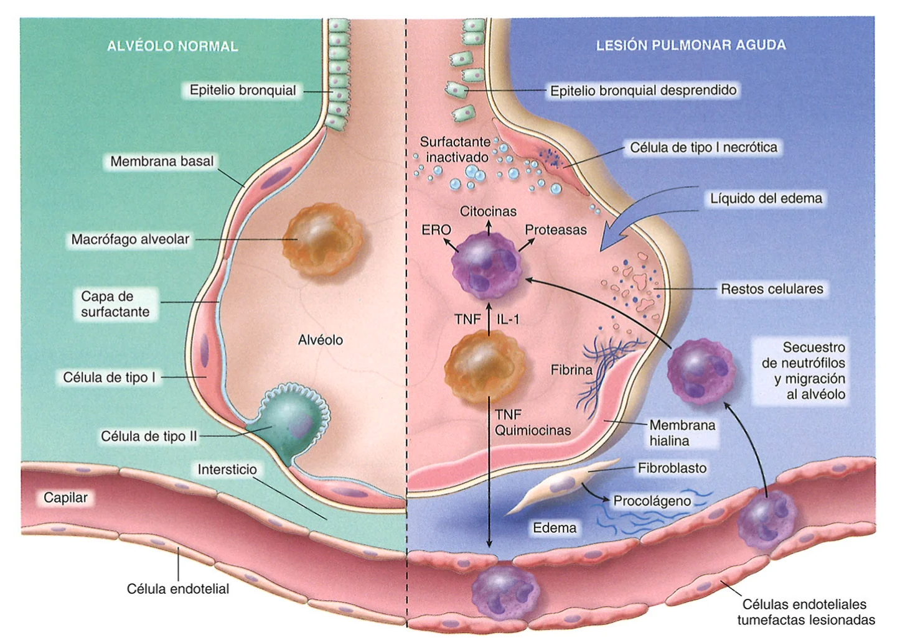
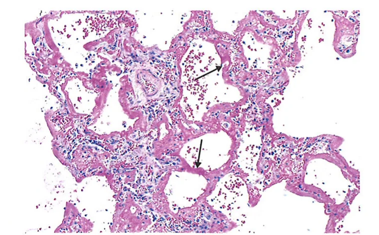
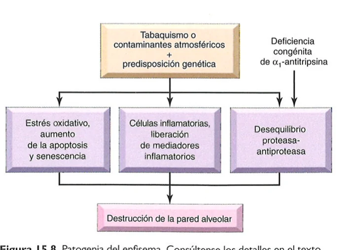
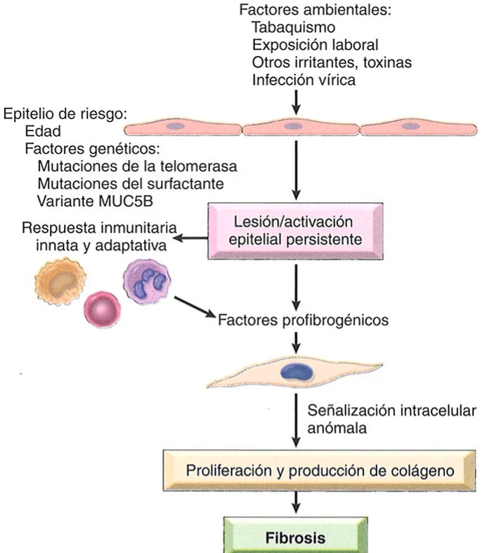
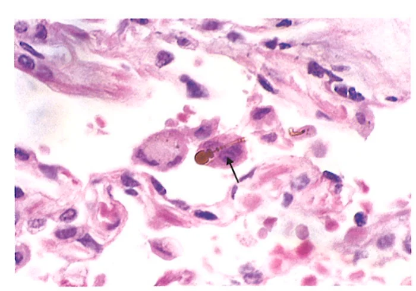
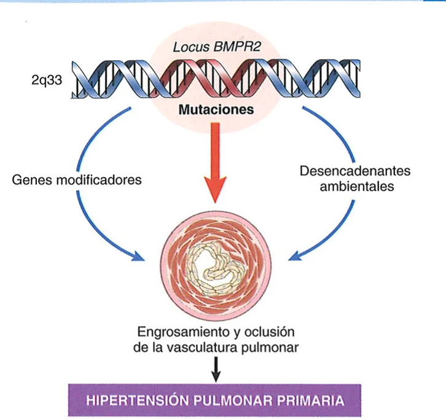
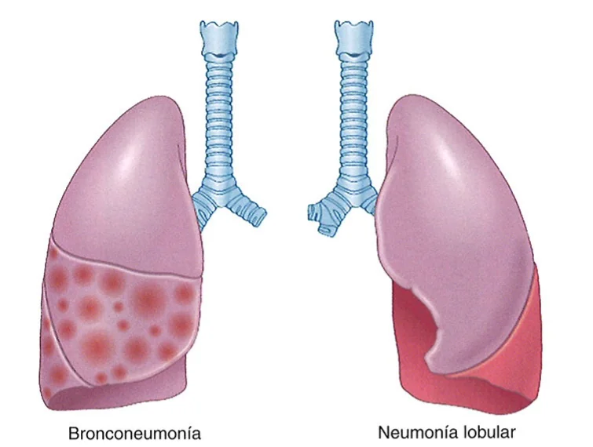
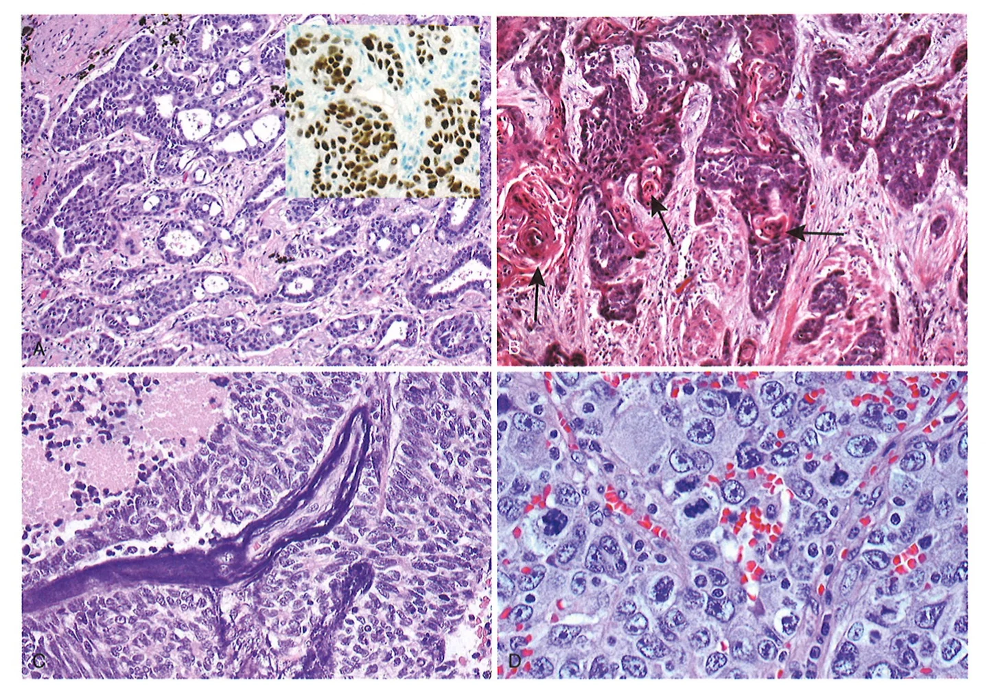

Qué cubre esta guía
Las citas p. N corresponden a la página impresa del libro. El texto se publica sin agregar contenido que no esté en el capítulo.
Lo esencial en 60 segundos
- El bronquio principal derecho, más vertical, recibe la mayoría de los materiales aspirados; los poros de Kohn permiten paso de bacterias y exudado entre alvéolos p. 673-674.
- SDRA: LPA grave con daño alveolar difuso, membranas hialinas e hipoxemia refractaria; sepsis, neumonía, aspirado gástrico y traumatismo explican el 50% de los casos p. 676-678.
- VEMS/CVF < 0,7 define obstrucción; en las restrictivas el cociente se mantiene normal porque VEMS y CVF caen proporcionalmente p. 678.
- Enfisema centroacinar (>95%) en grandes fumadores, lóbulos superiores; panacinar por déficit de α1-antitripsina, en bases p. 679-680.
- Silicosis predispone a tuberculosis y duplica el riesgo de cáncer pulmonar; el amianto más tabaco eleva el riesgo de carcinoma ×55 p. 694.
- Adenocarcinoma (~50%) es el más frecuente; el microcítico (15%) tiene inactivación de TP53 y RB, metástasis precoces y pronóstico pésimo p. 717-719.
Ideas clave
- El bronquio principal derecho es más vertical y sigue la línea de la tráquea: los materiales aspirados (vómito, sangre, cuerpos extraños) entran con más frecuencia en el pulmón derecho p. 673. El lobulillo pulmonar es el grupo de 3-5 bronquiolos terminales, cada uno con su ácino anexo (~7 mm de diámetro) p. 674.
- Los neumocitos de tipo I cubren el 95% de la superficie alveolar; los de tipo II sintetizan surfactante y reparan el daño alveolar regenerando células de tipo I p. 674. Los poros de Kohn permiten el paso de bacterias y exudados entre alvéolos vecinos p. 674.
- El edema pulmonar se divide en hemodinámico (aumento de presión hidrostática, típico de insuficiencia cardiaca izquierda) y lesional (daño del tabique alveolar, base del SDRA) p. 675-676.
- El SDRA es una lesión pulmonar aguda grave con daño alveolar difuso; la sepsis, la neumonía pulmonar difusa, el aspirado gástrico y el traumatismo explican el 50% de los casos; mortalidad de 35% (leve) a 46% (grave) p. 676, 678.
- VEMS/CVF < 0,7 define obstrucción del flujo aéreo; en las enfermedades restrictivas el cociente se mantiene normal porque VEMS y CVF descienden proporcionalmente p. 678.
- El enfisema centroacinar (>95% de los casos clínicamente significativos) afecta a bronquiolos respiratorios de grandes fumadores, con predominio en lóbulos superiores; el panacinar se asocia a deficiencia de α1-antitripsina y afecta las bases p. 679.
- En la patogenia del enfisema confluyen lesión tóxica por humo, desequilibrio proteasa-antiproteasa, estrés oxidativo (vía NRF2) e infección; ~1% de los enfisemas tienen deficiencia de α1-antitripsina (homocigotos ZZ, >80% desarrolla enfisema panacinar) p. 680.
- La bronquitis crónica se define como tos productiva ≥3 meses en ≥2 años consecutivos; el índice de Reid (normal 0,4) está aumentado proporcionalmente a la gravedad p. 681.
- La EPOC clásica cursa con >40 paquetes-año; el 80% de los casos es atribuible al tabaco; extremos del espectro clínico: "soplador rosado" (predominio enfisematoso) y "abotargado azul" (bronquítico puro) p. 679, 682.
- El asma atópica es una respuesta Th2 mediada por IgE: IL-4 induce IgE, IL-5 activa eosinófilos e IL-13 estimula moco e IgE; la remodelación bronquial añade obstrucción irreversible p. 684, 686-687.
- La fibrosis pulmonar idiopática (patrón de neumonía intersticial habitual) depende de daño epitelial alveolar repetido sobre terreno genético (mutaciones de telomerasa TERT, TERC, PARN, RTEL1; variante de MUC5B en ~1/3 de los casos); mediana de supervivencia de 3,8 años p. 689-690.
- El carcinoma de pulmón es la primera causa de mortalidad por cáncer en el mundo; adenocarcinoma (50%) > epidermoide (20%) > células pequeñas (15%); el tabaquismo multiplica el riesgo ×60 en grandes fumadores, y amianto + tabaco lo elevan ×55 p. 715-716, 721.
Anomalías congénitas
Muy raras. Las más frecuentes p. 674:
- Hipoplasia pulmonar: desarrollo deficiente de ambos pulmones por compresión o imposibilidad de expansión intrauterina (hernia diafragmática congénita, oligohidramnios). La hipoplasia grave es mortal en el periodo neonatal temprano.
- Quistes del intestino embrionario anterior: separación anormal del intestino anterior primitivo; se localizan en hilio y mediastino medio. Se clasifican según la pared en broncógenos (los más frecuentes, con epitelio cilíndrico ciliado seudoestratificado y pared con glándulas bronquiales, cartílago y músculo liso), esofágicos o entéricos. Se diagnostican por compresión, infección sobreañada o como hallazgo casual.
- Secuestro pulmonar: tejido pulmonar delimitado que (1) carece de conexión con las vías respiratorias y (2) tiene irrigación anómala desde la aorta o sus ramas. El extralobular es externo al pulmón, se presenta en lactantes como masa y puede asociarse a otras malformaciones; el intralobular está dentro del pulmón, afecta a niños mayores y se detecta por infecciones recidivantes localizadas o bronquiectasias.
- Menos frecuentes: atresia o estenosis traqueales, fístula traqueoesofágica, anomalías vasculares y sobreinsuflación congénita lobular p. 674.
Atelectasia (colapso)
Expansión incompleta de los pulmones (atelectasia neonatal) o colapso de un pulmón previamente insuflado; da parénquima mal aireado p. 674.
| Tipo | Mecanismo | Dirección del mediastino |
|---|---|---|
| Por reabsorción | Obstrucción bronquial (tapones de moco en asma, bronquitis crónica, bronquiectasias, postoperatorio; cuerpo extraño; tumor intrabronquial) → reabsorción del aire distal | Hacia el pulmón atelectásico |
| Por compresión | Acumulación pleural de líquido (trasudado, exudado, sangre), tumor o aire (neumotórax) | Alejándose del pulmón afectado |
| Por contracción | Fibrosis pulmonar focal o generalizada, o fibrosis pleural, que impide la expansión | No aplica |
Fuente: p. 675 La atelectasia extensa reduce la oxigenación y predispone a infección. Es reversible, salvo la causada por fibrosis p. 675.
Edema de pulmón
Acumulación excesiva de líquido intersticial y alveolar; da pulmones húmedos y pesados p. 675.
- Edema hemodinámico (cardiógeno): por aumento de la presión hidrostática, sobre todo en insuficiencia cardiaca izquierda; se acumula primero en las bases (zonas declives). Histología: capilares ingurgitados, trasudado intraalveolar rosa pálido finamente granulado, microhemorragias y macrófagos cargados de hemosiderina ("células de la insuficiencia cardiaca"). En la congestión crónica (p. ej., estenosis mitral) la fibrosis y el engrosamiento alveolar dan pulmones firmes y marrones (induración marrón), con deterioro respiratorio y predisposición a infección p. 675.
- Edema por lesión microvascular (no cardiógeno): lesión del endotelio o del epitelio alveolar con exudado inflamatorio en intersticio y alvéolos; es la base del SDRA. Causas: neumonía bacteriana, gases inhalados (O₂ a alta concentración, humo), aspiración de contenido gástrico, radiación, traumatismo; indirectas: sepsis, quemaduras, pancreatitis, LPAT, fármacos (bleomicina, metadona, anfotericina B, heroína, cocaína, paraquat); de origen desconocido: grandes altitudes y edema neurógeno p. 675-676.
Lesión pulmonar aguda y SDRA (daño alveolar difuso)
La LPA es hipoxemia de inicio brusco con edema pulmonar bilateral sin insuficiencia cardiaca; el SDRA es una LPA importante. Su sustrato histológico es el daño alveolar difuso (DAD). En raros casos aparece sin desencadenante conocido con evolución rápidamente progresiva (neumonía intersticial aguda) p. 676.
Patogenia
- Activación endotelial precoz: los macrófagos alveolares detectan la lesión del neumocito y liberan TNF; mediadores circulantes (sepsis) también activan el endotelio, que expresa moléculas de adhesión, proteínas procoagulantes y quimiocinas p. 676.
- Adhesión y extravasación de neutrófilos: degranulación con proteasas, especies reactivas del oxígeno y citocinas; las trampas extracelulares de neutrófilos (TEN) contribuyen directamente al daño p. 676.
- Acumulación de líquido y membranas hialinas: capilares con fuga → edema; necrosis del neumocito de tipo II → alteración del surfactante; el líquido rico en proteínas y detritos se organiza en membranas hialinas p. 676.
- Resolución obstaculizada: la necrosis epitelial impide la reabsorción del edema; si cede el estímulo inflamatorio, los macrófagos liberan TGF-β y PDGF → fibrosis de los tabiques; los neumocitos de tipo II residuales reemplazan a los de tipo I p. 676.
- La lesión no es uniforme: hay áreas rígidas mal aireadas pero perfundidas → desequilibrio ventilación-perfusión que agrava hipoxemia y cianosis p. 677.
- Más frecuente y de peor pronóstico en alcohólicos crónicos y fumadores; variantes genéticas de genes de inflamación y coagulación aumentan el riesgo p. 677.


Morfología
- Fase exudativa aguda: pulmones densos, firmes, rojos y empastados; congestión, edema, inflamación, fibrina y DAD; membranas hialinas céreas de fibrina y restos epiteliales necróticos tapizando los alvéolos (morfología similar a la de la enfermedad de membrana hialina del recién nacido) p. 677.
- Fase proliferativa u organizada: proliferación de neumocitos de tipo II y tejido de granulación; puede resolverse con deterioro mínimo o evolucionar a fibrosis cicatricial de los tabiques (fase fibrótica tardía) p. 677.


Clínica
Disnea y taquipnea intensas, hipoxemia resistente a oxigenoterapia, cianosis, infiltrados bilaterales difusos y pulmones rígidos que exigen presiones ventilatorias elevadas p. 678. En un estudio de 2016 en UCI de 50 países: incidencia de SDRA del 10,4%, con mortalidad del 35% (leve), 40% (moderado) y 46% (grave); la mayoría de las muertes se atribuye a sepsis, fallo multiorgánico o lesión pulmonar grave p. 678. No hay tratamiento específico demostrado; la mayoría de los supervivientes recupera la función pulmonar, pero una minoría queda con fibrosis intersticial p. 678.
Enfermedades pulmonares obstructivas y restrictivas
- Obstructivas: aumento de la resistencia al flujo aéreo por enfermedad difusa de la vía aérea. Espirometría: descenso de los flujos espiratorios máximos, con VEMS/CVF < 0,7 p. 678.
- Restrictivas: reducción de la expansión del parénquima con capacidad pulmonar total disminuida; VEMS y CVF descienden proporcionalmente, cociente normal. Dos grupos: pared torácica (obesidad grave, enfermedades pleurales, cifoescoliosis, poliomielitis) y enfermedades intersticiales/infiltrantes crónicas (neumoconiosis, fibrosis intersticial) p. 678.
Espectro de la EPOC (tabla 15.3)
| Localización | Término clínico | Etiología | Signos/síntomas |
|---|---|---|---|
| Bronquio | Bronquitis crónica | Humo de tabaco, contaminantes | Tos, producción de esputo |
| Bronquio | Bronquiectasias | Infecciones persistentes o graves | Tos, esputo purulento, fiebre |
| Bronquio | Asma | Causas inmunitarias o no definidas | Sibilancias, tos y disnea episódicos |
| Acino | Enfisema | Humo de tabaco | Disnea |
| Bronquiolo | Enfermedad de vías respiratorias pequeñas | Humo de tabaco, contaminantes, miscelánea | Tos, disnea |
Fuente: p. 678 Las fronteras no son nítidas: el asma puede dejar componente irreversible y la EPOC puede tener componente reversible (etiqueta clínica "EPOC/asma") p. 678.
Enfermedad pulmonar obstructiva crónica (EPOC)
Definida por la OMS como enfermedad frecuente, evitable y tratable con síntomas respiratorios persistentes y limitación del flujo aéreo por anomalías de las vías respiratorias y/o alvéolos, generalmente por exposición a partículas o gases nocivos p. 679. Entre el 35 y el 50% de los grandes fumadores desarrollan EPOC y ~80% de los casos es atribuible al tabaco; otros factores: desarrollo pulmonar escaso temprano, exposición laboral/ambiental, hiperrespuesta bronquial y polimorfismos genéticos p. 679.
Enfisema
Aumento irreversible del tamaño de los espacios aéreos distales al bronquiolo terminal con destrucción de sus paredes, más fibrosis sutil de vías pequeñas; factor contribuyente significativo a la obstrucción p. 679.
Tipos
| Tipo | Zona del ácino | Contexto | Localización |
|---|---|---|---|
| Centroacinar (centrolobulillar) | Central/proximal: bronquiolos respiratorios; alvéolos distales conservados | >95% de los casos clínicamente significativos; grandes fumadores con EPOC | Lóbulos superiores, segmentos apicales |
| Panacinar (panlobulillar) | Todo el ácino, uniforme | Deficiencia de α1-antitripsina, agravado por tabaco | Lóbulos inferiores, bordes anteriores, bases |
| Paraseptal (acinar distal) | Parte distal del ácino, junto a pleura | Subyace a neumotórax espontáneo en adultos jóvenes | Mitad superior; adyacente a fibrosis o atelectasias |
| Irregular | Irregular, con cicatrización | Casi siempre asociado a cicatriz; focos pequeños | Sin significación clínica en general |
Fuente: p. 679-680
Patogenia
- Lesión tóxica e inflamación: el humo daña el epitelio y genera inflamación con aumento de LTB4, IL-8, TNF; acumulación posterior de linfocitos T y B p. 680.
- Desequilibrio proteasa-antiproteasa: proteasas de neutrófilos y epitelio sin antiproteasas suficientes; base genética en el déficit de α1-antitripsina (gen del locus Pi en el cromosoma 14; ~0,012% de la población de EE. UU. es homocigota ZZ, con >80% de enfisema panacinar sintomático, más precoz y grave si fuma). El defecto existe en ~1% de todos los enfisemas p. 680.
- Estrés oxidativo: el gen NRF2 activa genes antioxidantes; los ratones Nrf2 negativos son mucho más sensibles al humo, y las variantes del eje NRF2 se asocian a enfermedad pulmonar por tabaquismo humana p. 680.
- Infección: no inicia la destrucción, pero agudiza la enfermedad existente p. 680.
- Mecánica: la pérdida de tejido elástico reduce la tracción radial sobre los bronquiolos respiratorios, que colapsan en la espiración → obstrucción funcional sin obstrucción mecánica p. 681.
- Otras variantes genéticas: receptor nicotínico de acetilcolina (influye en la adicción y también en el riesgo de cáncer de pulmón) p. 681.


Morfología
Pulmones voluminosos que solapan el corazón; en la enfermedad tabáquica predominan los dos tercios superiores. Alvéolos grandes visibles en superficie de corte, tabiques finos con fibrosis centroacinar focal, pérdida de las inserciones alvéolo-vía aérea, y vasos capilares con células endoteliales flotantes o protruyentes en forma de palillo de tambor; con la enfermedad avanzada, bullas que comprimen bronquiolos y vasos p. 681.
Otras formas de enfisema
- Hiperinsuflación compensadora: dilatación alveolar por pérdida de parénquima en otra parte (postcirugía) p. 682.
- Hiperinsuflación obstructiva: aire atrapado por obstrucción subtotal ("válvula de bola"); en lactantes, hiperinsuflación lobular congénita por hipoplasia del cartílago bronquial; el aire llega por colaterales (poros de Kohn y canales de Lambert). Puede ser mortal si comprime el pulmón sano adyacente p. 682.
- Enfisema bulloso: bullas subpleurales >1 cm en estado distendido, a menudo apicales, en cualquier enfisema; su rotura produce neumotórax p. 683.
- Enfisema intersticial: aire en estroma pulmonar, mediastino o subcutáneo por desgarros alveolares (tos) o heridas/fracturas costales p. 683.
Bronquitis crónica
Definición clínica: tos persistente con expectoración durante al menos 3 meses, en al menos 2 años consecutivos, sin otra causa identificable. Puede evolucionar a hipoxemia, hipertensión pulmonar y corazón pulmonar p. 681.
- Patogenia: exposición a irritantes inhalados (el 90% son fumadores; también polvo de cereales, algodón y sílice). Hipersecreción de moco por hipertrofia de glándulas submucosas (mediadores como histamina e IL-13) e hiperplasia de células caliciformes en vías pequeñas; disfunción adquirida del CFTR por tabaquismo con moco deshidratado; inflamación neutrófila, linfocitaria y macrofágica con fibrosis de vías <2-3 mm; la infección no inicia pero mantiene la enfermedad y es clave en las reagudizaciones; el humo interfiere además la acción ciliar p. 681.
- Morfología: hiperemia, edema y secreciones mucopurulentas; inflamación crónica linfocitaria y macrofágica, hipertrofia de músculo liso, hiperplasia de células caliciformes y aumento del tamaño de las glándulas mucosas medido con el índice de Reid (normal 0,4), proporcional a intensidad y duración; en casos graves, bronquiolitis obliterante; metaplasia y displasia escamosas por efecto irritante y mutágeno del humo p. 681.
Enfisema vs. bronquitis crónica (tabla 15.4)
| Característica | Enfisema | Bronquitis crónica |
|---|---|---|
| Edad (años) | 50-75 | 40-45 |
| Disnea | Intensa; temprana | Leve; tardía |
| Tos | Tardía; esputo escaso | Temprana; esputo abundante |
| Infecciones | Ocasionales | Frecuentes |
| Insuficiencia respiratoria | Terminal | Precoz, periódica |
| Corazón pulmonar | Infrecuente; terminal | Frecuente |
| Resistencia de vías respiratorias | Normal o ligeramente aumentada | Aumentada |
| Retracción elástica | Baja | Normal |
| Radiografía de tórax | Hiperinsuflación; corazón de tamaño normal | Vasos prominentes; corazón grande |
| Aspecto | Soplador rosado | Abotargado azul |
Fuente: p. 682
Clínica de la EPOC
Antecedente habitual de >40 paquetes-año; evolución gradual con disnea de esfuerzo y tos con expectoración; diagnóstico por espirometría con VEMS/CVF < 0,7 p. 682. El "soplador rosado" (predominio enfisematoso) tiene tórax en tonel, espiración prolongada, respiración con labios fruncidos, capacidad de difusión baja, gases relativamente normales en reposo y pérdida de peso; el "abotargado azul" (bronquítico puro) cursa con tos productiva, hipercapnia, hipoxemia y cianosis ligera p. 682. Tratamiento: abandono del tabaco, oxigenoterapia, broncodilatadores prolongados con corticoesteroides inhalados, antibióticos, fisioterapia, bullectomía, cirugía de reducción de volumen y trasplante en casos seleccionados p. 682. Muerte por hipertensión pulmonar y corazón pulmonar, insuficiencia respiratoria por infección sobreañada o neumotórax por rotura de bullas subpleurales p. 682.
Asma
Enfermedad heterogénea con inflamación crónica de las vías respiratorias y obstrucción variable del flujo espiratorio, con sibilancias, disnea, opresión torácica y tos; síntomas más probables de noche y a primera hora de la mañana; broncoconstricción al menos parcialmente reversible. El asma aguda grave (antes "estado asmático") es un ataque que no remite, potencialmente mortal p. 683.
Subtipos
- Atópica: hipersensibilidad tipo I mediada por IgE; comienza en la infancia; desencadenada por polvo, polen, cucarachas, epitelios de animales y alimentos, en sinergia con infecciones respiratorias víricas; antecedentes familiares; prueba cutánea positiva, IgE sérica total elevada o RAST positivo p. 683.
- No atópica: sin sensibilización alérgica; desencadenada por infecciones víricas (rinovirus, parainfluenza, virus sincitial respiratorio) y contaminantes (humo de tabaco, SO₂, ozono, NO₂); también frío y ejercicio p. 683.
- Medicamentosa: asma sensible al ácido acetilsalicílico, poco frecuente, en personas con rinitis de repetición y pólipos nasales; crisis y urticaria; mecanismo: inhibición de la ciclooxigenasa con descenso de prostaglandina E2, que normalmente frena a los leucotrienos B4, C4, D4 y E4 p. 683.
- Ocupacional: humos (resinas epoxi), polvos orgánicos (madera, algodón, platino), gases (tolueno) o químicos (formaldehído, penicilinas); bastan cantidades ínfimas tras exposiciones repetidas p. 683-684.
Patogenia
- Respuesta Th2 exagerada: IL-4 estimula la producción de IgE; IL-5 activa eosinófilos reclutados; IL-13 estimula la secreción de moco y la producción de IgE p. 684.
- La IgE se une a receptores Fc de los mastocitos submucosos; la reexposición produce la fase temprana (broncoconstricción por reflejos vagales, moco, vasodilatación y aumento de permeabilidad) y la fase tardía (reclutamiento de eosinófilos, neutrófilos y linfocitos T; Th17 reclutan neutrófilos) p. 684.
- Mediadores con eficacia farmacológica demostrada: leucotrienos C4, D4 y E4 (broncoconstricción prolongada), acetilcolina (receptores muscarínicos), antagonistas de la IL-5 (asma grave con eosinofilia) y galectina 10 (cristales de Charcot-Leyden, potentes inductores de inflamación y moco) p. 684.
- Mediadores con menor papel demostrado en el asma alérgica aguda: histamina y prostaglandina D2; sin antagonistas estudiados: IL-4, IL-13, TNF, eotaxina (CCL11), óxido nítrico, bradicinina, endotelinas p. 684.
- Genética: locus 5q con los genes de IL-3, IL-4, IL-5, IL-9, IL-13 y el receptor de IL-4 (los polimorfismos de IL-13, las asociaciones más firmes); alelos HLA II ligados a IgE frente a polen de ambrosia; variantes de IL-33, su receptor ST2 y TSLP (linfopoyetina estromal tímica) p. 684.
- Ambiente: hipótesis de la higiene (la exposición microbiana temprana protege); los niños sensibilizados con infecciones víricas inferiores (rinovirus tipo C, VSR) tienen un riesgo 10-30 veces mayor de asma persistente o grave p. 686.
- Un pequeño subgrupo grave, resistente a glucocorticoides, tiene infiltrados con más neutrófilos que eosinófilos, dirigidos por Th17 ante colonización bacteriana crónica p. 686.
Morfología
Pulmones hiperinsuflados con atelectasias focales; oclusión de bronquios y bronquiolos por tapones de moco con epitelio desprendido; espirales de Curschmann y cristales de Charcot-Leyden (galectina 10) en esputo y lavado p. 686. Remodelación: engrosamiento de la pared, fibrosis subbasal (colágeno tipos I y III), aumento de la vascularización, aumento de glándulas submucosas y células caliciformes, e hipertrofia/hiperplasia del músculo liso; esta remodelación puede dar obstrucción crónica irreversible p. 686.
Clínica
Crisis de horas o síntomas constantes amortiguados; en el asma grave aguda el paroxismo dura días o semanas con cianosis intensa o muerte p. 686. Diagnóstico: aumento de la obstrucción respecto al valor basal, espiración prolongada con sibilancias y, en el asma atópica, eosinofilia periférica con eosinófilos, espirales de Curschmann y cristales de Charcot-Leyden en esputo p. 686. Tratamiento: broncodilatadores, glucocorticoides y antagonistas de los leucotrienos; anti-IL-5 en asma grave Th2/eosinofílica. Hasta el 50% del asma infantil remite en la adolescencia, pero suele regresar en la edad adulta p. 686.
Bronquiectasias
Dilatación permanente de bronquios y bronquiolos por destrucción del músculo liso y tejido elástico por inflamación derivada de infecciones persistentes o graves; hoy poco frecuente p. 687.
- Causas: afecciones congénitas/hereditarias predisponentes (fibrosis quística, secuestro intralobular, inmunodeficiencias, discinesia ciliar primaria, síndrome de Kartagener); neumonía necrosante grave; obstrucción bronquial (tumor, cuerpo extraño, impactación de moco , lesión localizada al segmento obstruido); trastornos inmunitarios (artritis reumatoide, LES, enfermedad inflamatoria intestinal, rechazo crónico postrasplante). Hasta el 50% son idiopáticos p. 687.
- Patogenia: eje obstrucción–infección; el defecto de aclaramiento permite infección bacteriana crónica que destruye la pared bronquial; obliteración fibrosa de bronquiolos (bronquiolitis obliterante). La discinesia ciliar primaria es autosómica recesiva (1/10.000-20.000 nacimientos), con mutaciones de proteínas motoras ciliares (dineína); ~la mitad tiene síndrome de Kartagener (situs inversus + bronquiectasias + sinusitis), con infertilidad masculina por inmovilidad de espermatozoides p. 687.
- La aspergilosis broncopulmonar alérgica (asma o fibrosis quística) es una respuesta hiperinmunitaria frente a Aspergillus fumigatus con IgE elevada, anticuerpos anti-Aspergillus e inflamación eosinófila con tapones de moco, y a menudo provoca bronquiectasias p. 687.
Morfología
Lóbulos inferiores, bilateral, en vías distales; bronquios dilatados hasta 4 veces lo normal, seguibles casi hasta la pleura (en el pulmón normal no se siguen a menos de 2-3 cm de la pleura); superficie de corte quística con secreciones mucopurulentas p. 687. Histología: exudado inflamatorio agudo y crónico, ulceración, metaplasia escamosa, abscesos y, en la cronicidad, fibrosis parietal. H. influenzae aparece en ~la mitad y P. aeruginosa en el 12-30% de los cultivos de esputo p. 687.
Clínica
Tos intensa y persistente, expectoración fétida, a veces sanguinolenta, disnea y, en ocasiones, hemoptisis masiva; paroxismos matinales por drenaje posicional; obstrucción obstructiva con disnea y cianosis. Los antibióticos y la fisioterapia casi duplicaron la esperanza de vida; corazón pulmonar, abscesos cerebrales y amiloidosis son hoy complicaciones menos frecuentes p. 688.
Enfermedades intersticiales difusas crónicas (restrictivas)
Grupo heterogéneo con inflamación y fibrosis del intersticio y pruebas funcionales restrictivas. Clínica: disnea, taquipnea, crepitantes teleinspiratorios y posible cianosis, sin sibilancias; reducción de la capacidad de difusión, del volumen pulmonar y de la distensibilidad; radiografía con nódulos pequeños, líneas irregulares o vidrio esmerilado. Las formas avanzadas convergen en el pulmón en panal de abejas, con hipertensión pulmonar secundaria y corazón pulmonar p. 688.
Fibrosis pulmonar idiopática (FPI)
Síndrome clínico cuyo patrón histológico es la neumonía intersticial habitual (NIH); el mismo patrón se ve en enfermedades del tejido conjuntivo, neumonía crónica por hipersensibilidad y asbestosis, que deben excluirse p. 688-689.
- Patogenia: reparación aberrante de lesiones repetidas del epitelio alveolar. Factores ambientales: tabaquismo (multiplica el riesgo), contaminación, microaspiración, humos de metales, polvo de madera, granjeros/peluqueros/canteros. Genética: mutaciones de los genes de telomerasa TERT, TERC, PARN y RTEL1 (hasta el 15% de las FPI familiares; 25% de los esporádicos tienen telómeros periféricos acortados); mutaciones de genes de surfactante; polimorfismo del promotor de MUC5B en ~un tercio de los casos p. 689. Enfermedad de mayores: rara vez antes de los 50 años p. 689. El epitelio lesionado libera factores profibrogénicos (TGF-β), con fibroblastos anómalos vía PI3K/AKT que depositan colágeno p. 689.
- Morfología: pleura con aspecto en empedrado; fibrosis blanca y gomosa en lóbulos inferiores, subpleural y a lo largo de tabiques interlobulillares. Fibrosis intersticial parcheada con focos fibroblásticos precoces junto a cicatrices antiguas, panal de abeja con espacios tapizados por neumocitos de tipo II hiperplásicos o epitelio bronquiolar; inflamación leve linfocitaria; puede superponerse DAD en las exacerbaciones agudas p. 689-690.
- Clínica: inicio insidioso con disnea de esfuerzo y tos seca; mayoría entre 55 y 75 años; hipoxemia, cianosis y dedos en palillos de tambor en fases avanzadas. Mediana de supervivencia de 3,8 años; el trasplante es el único tratamiento definitivo; un inhibidor de la tirosina cinasa y un antagonista del TGF-β ralentizan la progresión p. 690.


Neumonía intersticial inespecífica (NII)
Se diagnostica por su pronóstico; en la mayoría se asocia a enfermedad del tejido conjuntivo, pero puede ser idiopática p. 690. Patrones celular (inflamación intersticial linfocitaria y plasmocitaria, uniforme o parcheada) y fibrosante (lesiones todas del mismo estadio, a diferencia de la NIH); sin focos fibroblásticos, panal de abeja, membranas hialinas ni granulomas. Mujeres no fumadoras en su sexta década; opacidades reticulares bilaterales simétricas en bases; el patrón celular tiene mejor pronóstico p. 690.
Neumonía en organización criptógena (NOC)
Respuesta a infección o lesión inflamatoria (neumonías víricas y bacterianas, toxinas inhaladas, fármacos, tejido conjuntivo, EICH). Radiografía: consolidaciones parcheadas subpleurales o peribronquiales. Histología: tapones polipoideos de tejido conjuntivo laxo (cuerpos de Masson) en conductos alveolares, alvéolos y bronquiolos, con pulmón de arquitectura conservada, sin fibrosis intersticial ni panal de abeja. Algunos se recuperan espontáneamente; la mayoría responde a corticoesteroides orales durante ≥6 meses p. 690.
Afectación pulmonar en enfermedades autoinmunitarias
LES, artritis reumatoide, esclerosis sistémica y dermatomiositis-polimiositis; patrones más frecuentes: NII, neumonía intersticial habitual, neumonía en organización y bronquiolitis p. 690-691.
- Artritis reumatoide: afectación pulmonar en el 30-40% , pleuritis crónica con o sin derrame, neumonitis intersticial difusa con fibrosis, nódulos reumatoideos intrapulmonares, bronquiolitis folicular e hipertensión pulmonar. Artritis reumatoide + neumoconiosis = síndrome de Caplan p. 691.
- Esclerosis sistémica: fibrosis intersticial difusa (patrón NII más frecuente que el de NIH) y afectación pleural. LES: infiltrados parcheados transitorios o neumonitis lúpica grave, pleuritis y derrame p. 691.
Neumoconiosis
Reacción del pulmón no neoplásico ante polvos minerales inhalados (incluye hoy humos y vapores químicos); la regulación laboral ha reducido su incidencia p. 691. Factores determinantes: retención (concentración, duración, aclaramiento), tamaño (las partículas de 1-5 µm son las más peligrosas, porque llegan a las vías terminales y sacos aéreos), solubilidad y citotoxicidad (partículas grandes poco solubles → neumoconiosis fibrosante colágena, como la silicosis), captación epitelial, activación del inflamasoma y tabaquismo, que empeora todos los polvos, en particular el amianto p. 691.
| Agente | Enfermedades |
|---|---|
| Polvo de carbón | Antracosis, máculas, fibrosis masiva progresiva, síndrome de Caplan |
| Sílice | Silicosis, síndrome de Caplan |
| Amianto | Asbestosis, placas pleurales, síndrome de Caplan, mesotelioma, carcinoma de pulmón, laringe, estómago y colon |
| Berilio | Beriliosis aguda, granulomatosis por berilio, carcinoma de pulmón (?) |
| Óxidos de hierro, bario, estaño | Siderosis, baritosis, estannosis |
| Polvos orgánicos | Pulmón del granjero (heno mohoso), bagazosis, pulmón del criador de pájaros |
| Humos y vapores tóxicos | Bronquitis, asma, edema pulmonar, SDRA, envenenamiento fulminante |
Fuente: p. 692
Neumoconiosis de los mineros del carbón
Espectro desde antracosis asintomática hasta neumoconiosis simple (poca o ninguna disfunción) y fibrosis masiva progresiva; el silicato contaminante favorece la progresión. Los mineros también desarrollan enfisema y bronquitis crónica independiente del tabaquismo p. 692. Morfología: máculas de carbón de 1-2 mm (macrófagos cargados de carbón) y nódulos con red de colágeno, en lóbulos superiores y zonas superiores de los inferiores, junto a bronquiolos respiratorios, con dilatación alveolar (enfisema centrolobulillar). La fibrosis masiva progresiva son cicatrices negras de ≥1 cm (hasta 10 cm), de colágeno denso y pigmento, con centro necrótico isquémico, que puede aparecer tras años p. 692-693. Clínica: normalmente benigna; en <10% aparece fibrosis masiva progresiva con disfunción grave, hipertensión pulmonar y corazón pulmonar, que sigue empeorando aunque cese la exposición. A diferencia de la silicosis, no aumenta la susceptibilidad a la tuberculosis ni al cáncer (sin tabaco) p. 693. El uso doméstico de carbón bituminoso ("carbón ahumado") sí se asocia a cáncer de pulmón incluso en no fumadores p. 693.
Silicosis
Enfermedad laboral crónica más prevalente en el mundo, por inhalación de dióxido de silicona cristalino (cuarzo, cristobalita, tridimita; el cuarzo es el más frecuente); riesgo mayor en afroamericanos; exposición en mineras, chorros de arena (tela vaquera envejecida), canteras, joyería. Exposición intensa breve puede causar silicosis aguda, con acumulación lipoproteinácea alveolar idéntica a la proteinosis alveolar p. 693.
- Patogenia: los macrófagos fagocitan los cristales → activación del inflamasoma con liberación de IL-1 e IL-18 → reclutamiento inflamatorio y activación de fibroblastos con depósito de colágeno p. 693.
- Morfología: nódulos diminutos (claros o ennegrecidos si hay polvo de carbón) en ganglios hiliares y zonas superiores; con la evolución, cicatrices duras de colágeno coalescentes; cavitación por tuberculosis sobreañadida o isquemia; calcificación en cáscara de huevo de los ganglios hiliares. Histología: nódulo con centro de fibras de colágeno arremolinadas y periferia de macrófagos cargados de polvo; partículas débilmente birrefringentes con luz polarizada p. 693-694.
- Clínica: presentación entre 10 y 30 años después de la exposición (lenta, lo más frecuente), acelerada (<10 años) o rápida (semanas-meses). Radiografía con nodularidad fina de zonas superiores; disnea solo con la fibrosis masiva progresiva; la enfermedad sigue empeorando sin exposición. Se asocia a mayor predisposición a tuberculosis (la sílice cristalina inhibe la destrucción de micobacterias fagocitadas por los macrófagos) y a un riesgo de cáncer de pulmón 2 veces mayor p. 694.
Enfermedades por amianto
El amianto es una familia de silicatos hidratados cristalinos asociados a fibrosis y cáncer. Procesos asociados: placas pleurales, fibrosis pleural difusa, derrames pleurales recurrentes, asbestosis (fibrosis intersticial parenquimatosa), carcinoma de pulmón y mesotelioma, más neoplasias de laringe, ovario y quizás colon p. 694.
- Formas: crisotilo (serpentina; 90% del amianto industrial, ensortijado y más soluble, se elimina por aclaramiento mucociliar) y anfiboles (rectos y rígidos, llegan a zonas profundas, penetran epitelio e intersticio; más patógenos, en particular para el mesotelioma) p. 694.
- El amianto es iniciador y promotor tumoral; los carcinógenos del humo del tabaco se adsorben a las fibras. En trabajadores del amianto: exposición sola → carcinoma ×5; amianto + tabaquismo → ×55 p. 694.
- Morfología: asbestosis = fibrosis intersticial difusa con cuerpos de amianto (bastones fusiformes o arrosariados marrón dorado con centro translúcido: fibras recubiertas de material proteico con hierro de la ferritina fagocitaria; otras partículas hierro-proteína se llaman cuerpos ferruginosos). Empieza alrededor de bronquiolos respiratorios y conductos alveolares, comienza en lóbulos inferiores y subpleurales (a diferencia del carbón y la sílice, que afectan zonas superiores) y evoluciona a panal de abeja; puede estrechar arterias → hipertensión pulmonar y corazón pulmonar. Placas pleurales: la manifestación más frecuente de la exposición; placas bien delimitadas de colágeno denso a menudo calcificado, en pleura parietal anterior y posterolateral y cúpulas diafragmáticas; su tamaño y número no se correlacionan con el nivel de exposición p. 695.
- Clínica: rara vez antes de 10 años de la primera exposición, más frecuente a los 20-30 años; disnea progresiva; radiografía con densidades lineales irregulares en lóbulos inferiores y panal de abeja avanzado; placas pleurales asintomáticas p. 695.


Complicaciones de los tratamientos
- Fármacos: los citotóxicos (bleomicina) causan toxicidad directa y fibrosis; la amiodarona daña el pulmón en el 5-15% de los pacientes; la tos por inhibidores de la ECA es muy frecuente; drogas intravenosas → granulomas y fibrosis por partículas de corte en la microvasculatura p. 696.
- Radiación: neumonitis aguda (1-6 meses posradiación, en el 3-44% según dosis y edad) con fiebre, disnea desproporcionada al volumen irradiado, derrame e infiltrados; DAD con atipia de neumocitos de tipo II y fibroblastos hiperplásicos y células espumosas en paredes vasculares; responde a esteroides o evoluciona a neumonitis crónica fibrosante p. 696.
Enfermedades granulomatosas
Sarcoidosis
Enfermedad granulomatosa sistémica de origen desconocido; linfoadenopatía hiliar bilateral o afectación del parénquima pulmonar en el 90% de los casos; lesiones oculares y cutáneas después. Diagnóstico de exclusión (micobacterias, hongos, beriliosis también producen granulomas no necrosantes). Adultos <40 años, más en mujeres; en EE. UU., 10 veces más frecuente en afroamericanos; rara en chinos y sudeste asiáticos p. 696.
- Patogenia: desregulación inmunitaria en personas predispuestas: acumulación intraalveolar e intersticial de linfocitos T CD4+ con relación CD4/CD8 de 5:1 a 15:1, expansión oligoclonal (dirigida por antígeno), citocinas Th1 (IL-2, IFN-γ), IL-8, TNF y proteína inflamatoria de macrófagos 1; el TNF en el lavado broncoalveolar es un marcador de actividad. Sistémicamente: anergia cutánea (Candida, PPD) e hipergammaglobulinemia policlonal. Asociación con HLA-A1 y HLA-B8 y agrupación familiar y racial p. 696.
- Morfología: granulomas no necrosantes bien formados de macrófagos epitelioides agrupados con células gigantes; necrosis central poco frecuente; con la cronicidad, fibrosis hialina. En ~60% de los granulomas, cuerpos de Schaumann (concreciones laminadas de calcio y proteínas) e inclusiones asteroides , característicos pero no patognomónicos (también en tuberculosis) p. 696-697. Pulmón: granulomas distribuidos por los linfáticos peribronquiales y perivasculares; su localización submucosa bronquial explica el alto rendimiento de la biopsia broncoscópica; fuerte tendencia a cicatrizar. Ganglios hiliares y mediastínicos afectados en casi todos los casos; amígdalas en un cuarto a un tercio; bazo en ~75% (esplenomegalia clínica solo en 20%); hígado algo menos; médula ósea en 20%; piel en 25% (nódulos, placas, eritema nudoso); ojo en 25% (iritis, iridociclitis, síndrome seco); síndrome de Mikulicz (sarcoidosis de parótida y glándulas salivales); neurosarcoidosis en 5-15% p. 697.
- Clínica: desde hallazgo radiológico casual hasta disnea, tos, dolor torácico, hemoptisis o síntomas generales. Evolución impredecible: 65-70% se recupera con secuelas mínimas; 20% pierde función pulmonar o visión de forma permanente; el 10-15% restante, con muerte sobre todo por fibrosis pulmonar progresiva y corazón pulmonar p. 697.
Neumonitis por hipersensibilidad
Trastornos de mecanismo inmunitario, predominantemente intersticiales, por exposición intensa y prolongada a antígenos orgánicos inhalados; afecta las paredes alveolares (sinónimo: alveolitis alérgica extrínseca). Progresan a fibrosis si no se retira el agente. Ejemplos: pulmón del granjero (actinomicetos termófilos en heno húmedo), pulmón del criador de palomas (proteínas de suero, excretas y plumas), pulmón del humidificador (termófilas en agua caliente); no olvidar aves mascotas y sótanos mohosos p. 698.
- Evidencia de mecanismo inmunitario: lavado broncoalveolar con quimiocinas (proteína 1 inflamatoria de macrófagos, IL-8), linfocitos T CD4+ y CD8+ elevados, anticuerpos séricos específicos frente al antígeno, inmunoglobulinas y complemento en paredes vasculares, y granulomas no necrosantes en dos tercios de los pacientes (hipersensibilidad tipo IV) p. 698.
- Morfología: fase aguda con lesión alveolar; fase subaguda con neumonitis intersticial linfocítica y plasmocitaria (eosinófilos raros) y granulomas no necrosantes; fase crónica con fibrosis intersticial, focos fibroblásticos, panal de abeja y bronquiolitis obliterante más granulomas p. 698.
- Clínica: crisis agudas 4-6 h tras la exposición, con fiebre, disnea, tos, leucocitosis e infiltrados micronodulares con trastorno restrictivo agudo, que duran 12 h o días; exposición continua → forma crónica fibrosante similar a otras neumopatías intersticiales p. 698.
Eosinofilia pulmonar
Infiltrado de eosinófilos reclutados por IL-5 y otros agentes. Categorías p. 698-699:
- Neumonía eosinófila aguda con insuficiencia respiratoria: inicio rápido con fiebre, disnea e hipoxemia; infiltrados difusos; más de 25% de eosinófilos en el lavado broncoalveolar; DAD con eosinófilos; respuesta rápida a corticoesteroides.
- Eosinofilia secundaria: infecciones parasitarias, micóticas y bacterianas, neumonitis por hipersensibilidad, alergia a fármacos; también asma, aspergilosis broncopulmonar alérgica y síndrome de Churg-Strauss (vasculitis).
- Neumonía eosinófila crónica idiopática: consolidación celular de predomínio periférico, con linfocitos y eosinófilos en septos y alvéolos; tos, fiebre, sudores nocturnos, disnea y pérdida de peso; responde a corticoesteroides; diagnóstico por exclusión.
Enfermedades intersticiales relacionadas con el tabaquismo
Neumonía intersticial descamativa (NID)
Grandes colecciones de macrófagos del fumador (citoplasma abundante con pigmento marrón pulverulento, algunos con cuerpos laminares de surfactante fagocitado) en los espacios aéreos; tabiques engrosados por infiltrado escaso de linfocitos, células plasmáticas y eosinófilos ocasionales, revestidos por neumocitos cúbicos; fibrosis leve; enfisema frecuente p. 699. Cuarta-quinta década; prácticamente todos los pacientes fuman; disnea y tos seca insidiosas con dedos en palillos de tambor; anomalía restrictiva ligera con descenso moderado de la capacidad de difusión; respuesta excelente a corticoesteroides y abandono del tabaco, aunque algunos casos evolucionan a fibrosis p. 699.
Enfermedad pulmonar intersticial asociada a bronquiolitis
Inflamación crónica y fibrosis peribronquiolar con macrófagos pigmentados intraluminales en bronquiolos respiratorios de primer y segundo orden; lesión frecuente en fumadores (en su forma leve, hallazgo casual); se denomina "asociada a bronquiolitis respiratoria" cuando hay síntomas, alteración funcional y de imagen. Fumadores con >30 paquetes-año en la cuarta-quinta década; el abandono del tabaquismo suele mejorar el cuadro p. 699.
Histiocitosis de células de Langerhans pulmonar
Colecciones focales de células de Langerhans con eosinófilos, que evolucionan a cicatriz con destrucción de vías respiratorias y espacios quísticos irregulares; imagen con anomalías quísticas y nodulares. Las células de Langerhans son células dendríticas inmaduras con núcleos hendidos, positivas para S100, CD1a y CD207 (langerina) y negativas para CD68. Más del 90% son adultos fumadores jóvenes o exfumadores; alrededor de la mitad mejora al dejar de fumar; otros casos tienen mutaciones activadoras de BRAF, compatible con proceso neoplásico, y algunos requieren trasplante p. 699.
Proteinosis alveolar pulmonar (PAP)
Acumulación de surfactante en espacios alveolares y bronquiolares por defecto de la función macrofágica ligado a la señalización de GM-CSF; radiología con opacidades asimétricas bilaterales parcheadas. Tres clases p. 699-700:
- Autoinmunitaria (antes "adquirida"): autoanticuerpos que neutralizan el GM-CSF; el 90% de los casos; adultos.
- Secundaria: asociada a trastornos hematopoyéticos, neoplasias, inmunodeficiencias, intolerancia a la lisina y silicosis aguda.
- Hereditaria/congénita: muy rara, recién nacidos, mutaciones de pérdida de función del GM-CSF o su receptor.
Morfología: precipitados intraalveolares rosa, homogéneos, positivos con PAS, con hendiduras de colesterol y proteínas de surfactante, con inflamación mínima; pulmón aumentado de peso; laminillas normales en ultraestructura (a diferencia de los trastornos por disfunción del surfactante) p. 700. Clínica: tos con esputo abundante gelatinoso, infecciones secundarias; puede haber disnea progresiva o evolución benigna. Tratamiento: lavado pulmonar total (referencia, útil en todas las formas), GM-CSF (eficaz en >50% de las autoinmunitarias) y trasplante de células madre en la congénita p. 700.
Trastornos por disfunción del surfactante
Enfermedades genéticas de genes del transporte o la secreción del surfactante; espectro desde insuficiencia respiratoria neonatal hasta enfermedad intersticial del adulto. Genes p. 700:
- ABCA3: el más frecuentemente mutado; autosómico recesivo; insuficiencia respiratoria rápidamente progresiva en los primeros meses con muerte.
- Proteína C del surfactante (SFTPC): segundo en frecuencia; autosómico dominante de evolución muy variable.
- Proteína B del surfactante (SFTPB): tercer gen; autosómico recesivo; lactante a término con dificultad respiratoria progresiva; muerte entre los 3 y 6 meses salvo trasplante pulmonar.
Morfología: material granular rosa intraalveolar, hiperplasia de neumocitos de tipo II, fibrosis intersticial y simplificación alveolar; los cuerpos laminares pequeños con núcleos electrodensos son diagnósticos de la mutación ABCA3 p. 700.
Enfermedades de origen vascular
Embolia e infarto de pulmón
Casi todos los coágulos de las arterias pulmonares grandes son embólicos, procedentes de las venas profundas de las piernas (>95%). La embolia pulmonar causa más de 50.000 muertes al año en EE. UU.; su incidencia en autopsia varía del 1% en pacientes hospitalarios generales al 30% en quemados, politraumatizados y fracturados; causa o contribuye al 10% de las muertes súbitas hospitalarias p. 700-701.
- Factores de riesgo: trombofilia; enfermedad cardiaca, cáncer, inmovilización; fractura de cadera de riesgo particularmente alto; hipercoagulabilidad primaria (factor V de Leiden, mutaciones de la protrombina, síndrome antifosfolipídico) o secundaria (obesidad, cirugía reciente, cáncer, anticonceptivos orales, embarazo); catéteres venosos centrales como nido de trombos en aurícula derecha p. 701.
- Consecuencias: compromiso respiratorio (segmento ventilado no perfundido) y hemodinámico (aumento de la resistencia al flujo); muerte súbita por bloqueo del flujo o insuficiencia cardiaca derecha aguda (corazón pulmonar agudo) p. 701.
- Morfología: émbolos grandes en la arteria pulmonar principal o sus ramas, o en la bifurcación ("en silla de montar"); los pequeños van a vasos periféricos. Si la función cardiovascular es adecuada, la arteria bronquial mantiene el parénquima: hay hemorragia sin infarto; solo ~10% de los émbolos causan infarto, sobre todo si la función cardiovascular ya está comprometida. ~75% de los infartos afectan los lóbulos inferiores y en >50% son múltiples; cuneiformes con el vértice hacia el hilio; hemorrágicos, rojo-azulados, que se aclaran a las 48 h y terminan en cicatriz retraída. Las líneas de Zahn distinguen el trombo del coágulo post mortem. Émbolos infectados → infartos sépticos, algunos con absceso p. 701.
- Clínica: el émbolo grande es una de las pocas causas de muerte prácticamente instantánea (disociación electromecánica); puede simular IAM con dolor torácico, disnea y shock; émbolos pequeños silentes o con dolor y tos transitorios. Síntomas de presentación en orden descendente: disnea, dolor pleurítico y tos, con dolor de pantorrillas o muslos en ~la mitad; con infarto, fiebre y hemoptisis. Un dimero D normal descarta la embolia en pacientes estables de riesgo bajo-moderado; diagnóstico por angio-TC pulmonar; el infarto se ve en la radiografía entre 12 y 36 h después, como infiltrado en cuna p. 702. Los émbolos suelen resolverse por contracción y fibrinólisis; los pequeños múltiples no resueltos → hipertensión pulmonar y corazón pulmonar crónico. Un émbolo pequeño puede presagiar uno mayor: 30% de riesgo de recidiva si subsiste el factor predisponente p. 702. Prevención: deambulación precoz, calcetines elásticos, anticoagulación de alto riesgo; tratamiento con anticoagulación, trombólisis en el shock (alto riesgo hemorrágico) y filtro de vena cava inferior si la anticoagulación está contraindicada p. 702. Del 60 al 80% de los émbolos son clínicamente silentes; solo un 5% causa corazón pulmonar agudo, shock o muerte p. 702.
Hipertensión pulmonar
Presión arterial pulmonar media ≥25 mmHg en reposo. Clasificación OMS en cinco grupos: (1) hipertensión arterial pulmonar (arterias musculares pequeñas); (2) por insuficiencia cardiaca izquierda; (3) por enfermedades pulmonares y/o hipoxemia; (4) tromboembólica crónica; (5) mecanismos poco claros o multifactoriales p. 702.
- Causas frecuentes: EPOC/enfermedad intersticial (obliteración capilar); cardiopatías (estenosis mitral transmite la presión al lado arterial); tromboembolias de repetición; enfermedades autoinmunitarias (especialmente esclerosis sistémica); apnea obstructiva del sueño (grupo 3, con obesidad e hipoxemia) p. 702-703.
- Hipertensión arterial pulmonar idiopática: hasta el 80% de los casos "idiopáticos" tiene base genética, a veces autosómica dominante con penetrancia incompleta (solo 10-20% de los familiares). Primer gen descubierto: BMPR2 (2q33), mutado en la línea germinal en el 75% de los casos familiares y el 25% de los esporádicos; insuficiencia haploide → disfunción y proliferación de células endoteliales y musculares lisas; modelo en dos pasos con genes modificadores y desencadenantes ambientales p. 703.
- Morfología: hipertrofia de la media de las arterias pulmonares e hipertrofia ventricular derecha; trombos organizados/recanalizados apuntan a embolias de repetición; fibrosis difusa o enfisema indican hipoxia crónica. Lesión característica de arteriolas y arterias pequeñas (40-300 µm): hipertrofia de la media y fibrosis de la íntima; en los casos graves, lesión plexiforme (penacho capilar que llena la luz de arterias dilatadas de pared fina), prominente en la hipertensión idiopática y familiar, en cardiopatía congénita con derivación izquierda-derecha y en la asociada a VIH y fármacos p. 703.
- Clínica: formas idiopáticas más frecuentes en mujeres de 20 a 40 años; síntomas solo en enfermedad avanzada: disnea y cansancio, a veces dolor anginoso; luego disnea grave, cianosis e hipertrofia ventricular derecha, con muerte por corazón pulmonar descompensado en 2-5 años en el 80% de los pacientes. Tratamiento: dirigir la causa; vasodilatadores en el grupo 1; trasplante pulmonar definitivo p. 703.


Síndromes de hemorragia pulmonar difusa
Incluyen síndrome de Goodpasture, hemosiderosis pulmonar idiopática y hemorragia asociada a vasculitis (vasculitis por hipersensibilidad, granulomatosis con poliangitis, LES). Histología: hemorragia intraalveolar aguda y macrófagos cargados de hemosiderina (azul de Prusia positivo) p. 703-704.
Hemosiderosis pulmonar idiopática
Rara; hemorragia alveolar difusa intermitente; mayoría en niños pequeños; tos productiva, hemoptisis y anemia con infiltrados difusos; sin anticuerpos frente a la membrana basal (lo que distingue de Goodpasture); respuesta favorable a prednisona y/o azatioprina sugiere mecanismo inmunitario; algunos desarrollan otros trastornos inmunitarios p. 704.
Síndrome de Goodpasture
Enfermedad autoinmunitaria con autoanticuerpos frente al dominio no colágeno de la cadena α3 del colágeno IV; cuando solo hay enfermedad renal se llama enfermedad por anticuerpos anti-MBG; el síndrome de Goodpasture designa al 40-60% de los pacientes que desarrollan además hemorragia pulmonar. Adolescentes o adultos en la tercera década, predomina en hombres y la mayoría son fumadores p. 704.
- Patogenia: los anticuerpos destruyen las membranas basales glomerulares y alveolares → glomerulonefritis rápidamente progresiva y neumonitis intersticial hemorrágica necrosante; contribuyen linfocitos B autorreactivos y linfocitos T; asociación con HLA-DRB1*1501 y HLA-DRB1*1502 p. 704-705.
- Morfología: pulmones pesados con neumonitis necrosante, hemorragia intraalveolar y macrófagos con hemosiderina; inmunofluorescencia con depósitos lineales de inmunoglobulinas a lo largo de las membranas basales alveolares; riñón con GNF proliferativa focal o con semilunas, con depósitos lineales de Ig y complemento diagnósticos, presentes incluso sin enfermedad renal clínica p. 705.
- Clínica: comienza con síntomas respiratorios (hemoptisis) y consolidación focal; luego glomerulonefritis con insuficiencia renal rápidamente progresiva; causa de muerte más frecuente: uremia. La plasmaféresis (elimina anticuerpos anti-MBG) más inmunodepresión simultánea mejoró mucho el pronóstico p. 705.
Poliangitis con granulomatosis
Antes granulomatosis de Wegener; afecta sobre todo vías respiratorias superiores y/o pulmones, con hemoptisis de presentación; la biopsia transbronquial suele dar poco tejido y puede no mostrar necrosis ni vasculitis; los hallazgos diagnósticos son la capilaritis y los granulomas mal formados y dispersos (a diferencia de los granulomas sarcoides, redondeados y bien definidos) p. 705.
Infecciones pulmonares
Las infecciones respiratorias son las más frecuentes de todos los órganos; las neumonías causan el 2,3% de todas las muertes en EE. UU. Neumonía = cualquier infección del parénquima pulmonar; aparece cuando se deterioran las defensas locales (pérdida del reflejo de tos, disfunción mucociliar por humo o virus, acumulación de secreciones en fibrosis quística, alcohol y humo que interfieren los macrófagos alveolares, congestión y edema) o la resistencia sistémica p. 705. "La gripe condena y la infección al final ejecuta" (Cruveilhier, 1919): la causa de muerte más frecuente en las epidemias de gripe es la neumonía bacteriana sobreañadida p. 705. Los defectos de la inmunidad innata y humoral aumentan las infecciones por bacterias piógenas; los defectos celulares, las de micobacterias, virus del herpes y Pneumocystis jiroveci; las mutaciones germinales de MyD88 se asocian a neumonías neumocócicas destructivas p. 705. No se identifica patógeno en el 50% de los casos, y entonces el síndrome clínico orienta el tratamiento empírico p. 705.
Síndromes de neumonía (tabla 15.7)
| Síndrome | Patógenos principales |
|---|---|
| Aguda extrahospitalaria | S. pneumoniae, H. influenzae, M. catarrhalis, S. aureus, Legionella pneumophila, K. pneumoniae, P. aeruginosa, Mycoplasma pneumoniae, Chlamydia, Coxiella burnetii, virus (VSR, parainfluenza, metapneumovirus, gripe, adenovirus) |
| Asociada a la atención sanitaria | S. aureus sensible/resistente a meticilina, P. aeruginosa, S. pneumoniae |
| Nosocomial | Enterobacteriaceae (Klebsiella, Serratia marcescens, E. coli), Pseudomonas, S. aureus resistente a meticilina |
| Por aspiración | Flora oral anaerobia (Bacteroides, Prevotella, Fusobacterium, Peptostreptococcus) + aerobios |
| Crónica | Nocardia, Actinomyces; granulomatosa: M. tuberculosis, micobacterias atípicas, Histoplasma, Coccidioides, Blastomyces |
| Necrosante y absceso | Anaerobios, S. aureus, K. pneumoniae, S. pyogenes, neumococos tipo 3 |
| Huésped inmunodeprimido | CMV, P. jiroveci, complejo M. avium-intracellulare, Aspergillus, Candida |
Fuente: p. 706
Neumonías bacterianas extrahospitalarias
Infección pulmonar en personas por lo demás sanas; puede ser bacteriana o vírica, sin diferenciación clínica ni radiológica suficiente; la procalcitonina se eleva más en las bacterianas p. 706. Predisponen: edades extremas, enfermedades crónicas (ICC, EPOC, diabetes), inmunodeficiencias y asplenia (riesgo de bacterias encapsuladas como el neumococo) p. 706.
- Streptococcus pneumoniae: causa más frecuente de neumonía extrahospitalaria. Gram de esputo con diplococos grampositivos en lanceta apoya el diagnóstico, pero forma parte de la flora del 20% de los adultos (falsos positivos); los hemocultivos son más específicos pero menos sensibles (positivos solo en el 20-30% inicial). Vacunas con polisacáridos capsulares para pacientes con alto riesgo de sepsis p. 706.
- Haemophilus influenzae: gramnegativo pleomorfo; seis serotipos encapsulados, el tipo b el más virulento; la vacuna redujo la enfermedad por tipo b y aumentó la relativa de las formas no tipificables (otitis media, sinusitis, bronconeumonia). Urgencia pediátrica por su elevada mortalidad; antes de la vacuna, causa frecuente de meningitis supurativa hasta los 5 años. Es la causa bacteriana más frecuente de exacerbación aguda de la EPOC p. 706-707.
- Moraxella catarrhalis: neumonía en ancianos; segunda causa bacteriana de exacerbación aguda de la EPOC; una de las tres causas más frecuentes de otitis media infantil junto a neumococo y H. influenzae p. 707.
- Staphylococcus aureus: neumonía secundaria tras enfermedad vírica respiratoria (sarampión en niños, gripe en niños y adultos); alta incidencia de absceso pulmonar y empiema; alta en adictos a drogas intravenosas con endocarditis y en la neumonía nosocomial p. 707.
- Klebsiella pneumoniae: gramnegativo más frecuente; personas debilitadas y malnutridas, en particular alcohólicos crónicos; esputo mucoide espeso, a menudo hemático p. 707.
- Pseudomonas aeruginosa: en fibrosis quística e inmunodeprimidos; frecuente en neutropénicos; invade vasos sanguíneos con diseminación extrapulmonar; septicemia fulminante p. 707.
- Legionella pneumophila: enfermedad de los legionarios y fiebre de Pontiac (autolimitada); crece en agua artificial (torres de refrigeración, redes domésticas); transmisión por aerosol o aspiración; grave en cardiopatía, nefropatía, inmunodepresión y receptores de trasplante; mortalidad hasta 50% en inmunodeprimidos. Diagnóstico rápido por PCR en esputo o antígeno urinario; el cultivo es la referencia pero tarda 3-5 días p. 707.
- Mycoplasma pneumoniae: niños y adultos jóvenes; esporádico o epidémico en comunidades cerradas (colegios, acuartelamientos, presidios) p. 707.
Morfología de la neumonía bacteriana
Dos patrones: bronconeumonia (lobulillar) con consolidación parcheada y neumonía lobular con consolidación de un lóbulo; los patrones se superponen y el mismo microorganismo puede producir ambos p. 707. En la neumonía lobular se describen clásicamente cuatro estadios: (1) congestión (pulmón pesado, pastoso, rojo; exudado con escasos neutrófilos y bacterias); (2) hepatización roja (exudado masivo confluente de neutrófilos, eritrocitos y fibrina; lóbulo rojo, firme, sin aire, de consistencia hepática); (3) hepatización gris (desintegración progresiva de eritrocitos con exudado fibrinoso supurativo, color gris-pardo), y (4) resolución (exudado degradado y reabsorbido, ingerido por macrófagos, expectorado u organizado por fibroblastos) p. 708. La bronconeumonia es multilobular, bilateral y basal por descenso por gravedad de las secreciones p. 708.


Complicaciones: absceso pulmonar (particularmente con neumococo y Klebsiella), empiema (diseminación a la cavidad pleural) y diseminación bacteriémica con abscesos, endocarditis, meningitis o artritis supurativa p. 708-709. Clínica: fiebre de inicio brusco, escalofríos con temblores y tos con esputo mucopurulento, a veces hemoptisis; dolor pleurítico con roce; con antibióticos, mejoría en 48-72 h. Mueren <10% de los hospitalizados, casi siempre por complicaciones o alcoholismo crónico p. 709.
Neumonía vírica extrahospitalaria
Virus más frecuentes: gripe A y B, VSR, metapneumovirus humano, adenovirus, rinovirus, rubéola y varicela; favorecen la diseminación las edades extremas, la malnutrición, el alcoholismo y las enfermedades debilitantes; el daño mucociliar predispone a sobreinfecciones bacterianas, a menudo más graves que la infección vírica p. 709.
- Gripe: los virus A infectan humanos, cerdos, caballos y aves; hemaglutinina (H1, H2, H3) se une al ácido siálico y facilita la entrada; neuraminidasa (N1, N2) libera los viriones; los anticuerpos frente a ambas previenen y mejoran la infección. Genoma de ocho cadenas de ARN. Las epidemias se deben a mutaciones puntuales (desviación antigénica); las pandemias, al reemplazo completo de ambos genes por recombinación con virus animales (desplazamiento antigénico), como en 1918 (20-40 millones de muertes) y 2009 (graves en adultos jóvenes por ausencia de anticuerpos previos). La preocupación actual es la gripe aviar H5N1 p. 709-710.
- Metapneumovirus humano: paramixovirus descubierto en 2001; responsable del 5-10% de las hospitalizaciones y del 12-20% de las visitas ambulatorias por infección respiratoria aguda infantil; indistinguible clínicamente del VSR; reinfecciones frecuentes p. 710.
- Coronavirus humanos: los de alta patogenicidad (p. ej., SARS-CoV-2) se unen a ACE2 en el epitelio alveolar, lo que explica el tropismo pulmonar; en predisponentes ancianos, la respuesta inmunitaria con citocinas puede causar lesión pulmonar aguda y SDRA p. 710.
- Morfología (común a todos los virus): hiperemia y tumefacción mucosa con infiltrado mononuclear; la bronquiolitis con tapones de restos celulares, fibrina y exudado puede organizarse en bronquiolitis obliterante con daño permanente. En el pulmón: inflamación intersticial mononuclear con tabiques engrosados y edematosos; con SDRA, membranas hialinas. Herpes simple, varicela y adenovirus añaden necrosis epitelial p. 710.
- Clínica: a menudo enmascarada como "resfriado de pecho"; la tos puede faltar, con fiebre, cefalea y mialgia; síntomas desproporcionados a los escasos signos físicos por el desequilibrio ventilación-perfusión; suelen ser leves y autolimitadas, pero en forma epidémica la morbimortalidad es significativa p. 710.
Neumonía asociada a la atención sanitaria
Factores de riesgo: hospitalización reciente ≥2 días, procedencia de residencia o centro de larga estancia, visitas a hospital o hemodiálisis, antibióticos intravenosos, quimioterapia o curas de heridas recientes; patógenos más frecuentes: S. aureus resistente a meticilina y P. aeruginosa; mortalidad mayor que en la extrahospitalaria p. 711.
Neumonía nosocomial
Adquirida durante la estancia hospitalaria; pacientes con enfermedad grave, inmunodepresión, antibióticos prolongados o dispositivos invasivos; riesgo particularmente alto con ventilación mecánica. Aislados más frecuentes: cocos grampositivos (principalmente S. aureus, resistente a meticilina) y bacilos gramnegativos (Enterobacteriaceae y Pseudomonas) p. 711.
Neumonía por aspiración
En pacientes muy debilitados o con aspiración de contenido gástrico por reflejos nauseoso y de deglución alterados (coma, ictus, vómitos repetidos). Es en parte química (ácido gástrico) y en parte bacteriana (flora oral), con recuperación de más de un microorganismo, más aerobios que anaerobios. A menudo necrosante, de evolución fulminante y causa de muerte; en los supervivientes, el absceso pulmonar es complicación habitual. La microaspiración crónica (reflujo gastroesofágico) da granulomas necrosantes pequeños y mal formados con cuerpo extraño, generalmente sin consecuencias p. 711.
Absceso pulmonar
Proceso supurativo localizado con necrosis del tejido pulmonar. Gérmenes más frecuentes: estreptococos aerobios y anaerobios, S. aureus y gramnegativos; los anaerobios orales (Bacteroides, Fusobacterium, Peptococcus) son exclusivos del aislado en el 60% de los casos p. 711. Vías de entrada: aspiración (la más frecuente; riesgo con alcohol, opioides, coma, anestesia, convulsiones, disfagia, mala higiene dental); infección pulmonar previa (S. aureus, K. pneumoniae, neumococo); embolia séptica (tromboflebitis, endocarditis derecha); neoplasia (neumonía postobstructiva); penetración traumática y extensión directa; el resto son abscesos criptógenos p. 711.
Morfología: de milímetros a 5-6 cm; los por aspiración son más frecuentes en el lado derecho (bronquio más vertical) y únicos; los asociados a neumonía o bronquiectasias, múltiples y basales; los sépticos, múltiples y diseminados. Destrucción supurativa con cavitación; sobreinfecciones saprofíticas; cavidades multiloculadas fétidas verde-negruzcas = gangrena de pulmón; en los crónicos, pared fibrosa p. 712. Clínica similar a las bronquiectasias: tos, fiebre y esputo purulento o sanguinolento de mal olor; dedos en palillos de tambor. Siempre descartar carcinoma subyacente en el adulto mayor: se encuentra en el 10-15% de los casos. Complicaciones: extensión a la pleura, hemorragia, abscesos cerebrales o meningitis por émbolos sépticos y, pocas veces, amiloidosis secundaria tipo AA p. 712.
Neumonía crónica (granulomatosa micótica)
Lesión localizada en el paciente inmunocompetente, con o sin ganglios regionales; reacción granulomatosa por bacterias (M. tuberculosis, comentado en capítulo 8) u hongos p. 712.
Histoplasmosis
Por inhalación de microconidios de Histoplasma capsulatum en polvo con guano de aves o murciélagos; endémica en los valles de los ríos Ohio y Mississippi y el Caribe. Patógeno intracelular en fagocitos, como M. tuberculosis; presentaciones: primaria pulmonar autolimitada (lesiones numulares), secundaria progresiva crónica en vértices (tos, fiebre, sudores nocturnos), diseminación a mediastino, suprarrenales, hígado o meninges, y enfermedad diseminada en inmunodeprimidos. La inmunidad Th1 con IFN-γ y TNF activa los macrófagos para destruir las levaduras p. 712. Morfología: granulomas necrosantes que se fibrosan y calcifican de forma concéntrica ("en corteza de árbol"); diagnóstico diferencial con tuberculosis, sarcoidosis y coccidioidomicosis por la identificación de levaduras de 3-5 µm de pared fina persistentes en los tejidos; en la diseminada fulminante no hay granulomas sino fagocitos mononucleados llenos de levaduras p. 712.
Blastomicosis
Blastomyces dermatitidis, hongo dismórfico del suelo; centro y sudeste de EE. UU., Canadá, México, Oriente Medio, África e India. Formas: pulmonar, diseminada y cutánea primaria (inoculación directa). Lesiones pulmonares: granulomas supurativos. En los tejidos, levadura redonda de 5-15 µm que germina con base amplia, pared gruesa de doble contorno y núcleos visibles. La afectación de piel y laringe con hiperplasia epitelial intensa puede confundirse con carcinoma epidermoide p. 713.
Coccidioidomicosis
Coccidioides immitis; más del 80% de las personas de áreas endémicas (sudoeste y oeste de EE. UU., México) tienen reacción cutánea positiva; las artroconidias bloquean la fusión fagolisosoma y resisten la muerte intracelular. ~10% desarrolla lesiones pulmonares y <1% enfermedad diseminada (piel y meninges); riesgo alto en filipinos, afroamericanos e inmunodeprimidos. Morfología: esférulas de doble pared de 20-60 µm llenas de endosporas dentro de macrófagos o células gigantes; al romperse liberan endosporas con reacción piógena superpuesta; inflamación granulomatosa, piógena o mixta p. 713.
Neumonía en el huésped inmunodeprimido
Infiltrado pulmonar con o sin fiebre: complicación grave y frecuente de la inmunodepresión (trasplante, quimioterapia, radioterapia); a menudo hay más de un agente; mortalidad alta. El diagnóstico diferencial incluye reacciones medicamentosas y afectación tumoral p. 714. Según el agente: bacterias (P. aeruginosa, micobacterias, gramnegativos), virus (CMV, herpes) y hongos (P. jiroveci, Candida, Aspergillus, ficomicetos, Cryptococcus) p. 714.
| Característica | Infiltrados difusos | Infiltrados focales |
|---|---|---|
| Frecuentes | Bacterias gramnegativas, CMV, P. jiroveci, S. aureus, reacción medicamentosa | Aspergillus, Candida, procesos malignos |
| Infrecuentes | Neumonía bacteriana, Cryptococcus, Aspergillus, Mucor, P. jiroveci, Cryptococcus, malignos | Pneumocystis, Cryptococcus, malignos, Legionella |
Fuente: p. 714
Enfermedad pulmonar en la infección por VIH
La enfermedad pulmonar causa el 30-40% de las hospitalizaciones en personas con VIH; no olvidar las neumonías bacterianas por patógenos habituales (S. pneumoniae, S. aureus, H. influenzae, bacilos gramnegativos), más frecuentes, más graves y con más bacteriemia que en otros pacientes. También hay causas no infecciosas: sarcoma de Kaposi, linfoma no hodgkiniano y cáncer de pulmón p. 714. El recuento de CD4+ orienta: infecciones bacterianas y tuberculosas con CD4+ >200 células/mm³; neumonía por Pneumocystis con CD4+ <200; CMV, hongos y complejo M. avium-intracellulare solo con CD4+ <50 células/mm³. Puede haber más de una causa simultánea y presentaciones atípicas p. 714.
Trasplante de pulmón
Indicaciones: enfermedad pulmonar terminal no neoplásica sin otra enfermedad que impida la inmunodepresión de por vida. Las más frecuentes: EPOC terminal, fibrosis pulmonar idiopática, fibrosis quística e hipertensión arterial pulmonar idiopática/familiar. El trasplante bilateral da mejor supervivencia, pero el unilateral beneficia a dos receptores de un donante; en infecciones bilaterales crónicas (fibrosis quística, bronquiectasias) deben reemplazarse ambos pulmones p. 714. Complicaciones principales del injerto: infección y rechazo p. 715.
- Infecciones: en las primeras semanas predominan las bacterianas; la profilaxis con ganciclovir redujo la neumonía por CMV; la mayoría de las infecciones aparecen entre el tercer y el duodécimo mes; P. jiroveci es rara por profilaxis con trimetoprim-sulfametoxazol; hongos (Aspergillus, Candida) pueden afectar las anastomosis bronquiales p. 715.
- Rechazo agudo: infiltrados alrededor de vasos pequeños y/o submucosa bronquial (linfocitos, células plasmáticas, escasos neutrófilos y eosinófilos); responde bien al tratamiento p. 715.
- Rechazo crónico: problema en al menos la mitad de los pacientes entre 3 y 5 años; se manifiesta con tos, disnea y deterioro irreversible de la función por fibrosis; su correlato morfológico es la bronquiolitis obliterante (oclusión fibrosa parcial o completa de las vías pequeñas), de distribución parcheada y difícil de diagnosticar por biopsia transbronquial; también puede dar bronquiectasias y fibrosis pulmonar; su evolución puede frenarse, pero no revertirse p. 715.
- El linfoma B asociado a VEB es una complicación menos frecuente, que se origina con más frecuencia dentro del aloinjerto. Mediana de supervivencia global de 6 años; mejores resultados en jóvenes y trasplante bilateral p. 715.
Tumores
Del 90 al 95% de los tumores pulmonares son carcinomas, ~5% tumores carcinoides y 2-5% mesenquimatosos y otros p. 715. El cáncer de pulmón es el más diagnosticado y la primera causa de mortalidad por cáncer en el mundo: 2,1 millones de casos nuevos y 1,8 millones de muertes en 2018; en EE. UU., ~230.000 casos nuevos y >150.000 muertes (~28% de las muertes por cáncer); mata a más personas que los cánceres de colon, mama y próstata juntos. Edades 55-84 años, máxima incidencia 65-74; solo el 2% antes de los 40. Desde 1987, el cáncer de pulmón causa más muertes anuales que el de mama en mujeres p. 715.
Etiología y patogenia
- Tabaquismo: ~80% de los casos en fumadores activos o recientes; correlación prácticamente lineal con los paquetes-año; el riesgo es 60 veces mayor en grandes fumadores (2 paquetes/día durante 20 años) frente a no fumadores; solo desarrolla cáncer el 10-15% de los fumadores, lo que implica otros factores. Las mujeres son más susceptibles a los carcinógenos del tabaco. Dejar de fumar reduce el riesgo pero puede no volver al basal (los cambios genéticos persisten años en el epitelio de exfumadores). El humo pasivo mata ~3.000 no fumadores al año en EE. UU. p. 716.
- Riesgos industriales: amianto, arsénico, cromo, uranio, níquel, cloruro de vinilo y gas mostaza. Mineros de uranio no fumadores: riesgo ×4; fumadores, ×10. Amianto: latencia de 10-30 años; trabajadores no fumadores ×5; amianto + tabaquismo ×55 p. 716.
- Radón: gas radiactivo vinculado al cáncer en mineros del uranio; preocupación por la exposición domiciliaria de bajo nivel p. 716.
- Mutaciones adquiridas: efecto de campo en la mucosa de fumadores; cada subtipo histológico tiene su firma molecular (ver más abajo). Fumadores con variantes de P-450 de alta activación de procarcinógenos, o con "genotipo sensible al mutágeno" (más roturas cromosómicas en linfocitos), tienen riesgo mayor (hasta 10 veces el del genotipo sensible al mutágeno) p. 716.
- Cáncer de pulmón en no fumadores: 25% de los cánceres de pulmón en el mundo (10-15% en el mundo occidental); más frecuentes en mujeres, en su mayoría adenocarcinomas con mutaciones dianas; más probable EGFR mutado y casi nunca KRAS p. 717.
- Lesiones precursoras: hiperplasia adenomatosa atípica, adenocarcinoma in situ, displasia escamosa y carcinoma in situ, e hiperplasia difusa de células neuroendocrinas pulmonares idiopática; "precursor" no implica progresión inevitable p. 717.
Clasificación
| Tipo histológico | Proporción |
|---|---|
| Adenocarcinoma | ~50% |
| Carcinoma epidermoide | ~20% |
| Carcinoma de células pequeñas | ~15% |
| Carcinoma de células grandes | ~2% |
| Otros | ~13% |
Fuente: p. 717 Patrones mixtos en el 4-5% de los carcinomas. La incidencia del adenocarcinoma ha aumentado y es hoy el más frecuente en ambos sexos p. 717.
Morfología de los principales subtipos
- Adenocarcinoma: periférico, más pequeño; patrones acinar, lepidico, papilar, micropapilar y sólido; mayoría expresa TTF-1. Precursoras: hiperplasia adenomatosa atípica (≤5 mm, neumocitos displásicos sobre paredes levemente fibróticas) y adenocarcinoma in situ (<3 cm, crecimiento puramente lepidico sin invasión, antes "carcinoma bronquioloalveolar"); los tumores ≤3 cm con componente invasivo ≤5 mm son microinvasivos, con pronóstico bastante más favorable. Los mucinosos se diseminan por vía aérea con tumores satélite y pueden simular una neumonía lobular p. 717-718.
- Carcinoma epidermoide: más frecuente en hombres, fuertemente asociado al tabaco, típicamente central/hiliar (aunque la proporción periférica aumenta); secuencia metaplasia escamosa → displasia → carcinoma in situ → invasivo. Crecimiento exofítico intraluminal con atelectasia e infección distales, o infiltración peribronquial hacia cariña y mediastino. Histología: queratinización (perlas escamosas) y puentes intercelulares p. 718.
- Carcinoma de células pequeñas: muy agresivo, casi siempre tabáquico (solo 1% en no fumadores); sin fase preinvasiva conocida; metástasis extensas y desenlace letal prácticamente en todos los casos. Células pequeñas (<3 veces el diámetro de un linfocito, ~25 µm), citoplasma escaso, amoldamiento nuclear, alta actividad mitótica y necrosis extensa; efecto de Azzopardi (tinción basófila de paredes vasculares por ADN de células necróticas). Diferenciación neuroendocrina (gránulos densos de ~100 nm; cromogranina, sinaptofisina, CD56). Inactivación casi universal de TP53 y RB, pérdida del 3p y amplificación de MYC p. 718-719.
- Carcinoma de células grandes: diagnóstico de exclusión; sin expresión de TTF-1 ni napsina A (adenocarcinoma) ni p40/p63 (epidermoide); variante neuroendocrina de células grandes con biología similar al microcítico pero células mayores p. 719.


Genética por subtipo
- Adenocarcinoma: ~1/3 con mutaciones activadoras de vías de factores de crecimiento: EGFR (10-15% en blancos, mayor en mujeres asiáticas no fumadoras), ALK (3-5%), ROS1 (1%), MET (2-5%), RET (1-2%), BRAF (2%), PI3K (2%) y KRAS (~30%). Todas dianas o pronósticas p. 717.
- Carcinoma epidermoide: deleciones de 3p y 9p (locus CDKN2A/p16) precoces; TP53 mutado en la mayoría (p53 sobreexpresada en el 10-50% de las displasias y el 60-90% de los carcinomas in situ); CDKN2A mutado en el 65%; amplificación de FGFR1 p. 717.
- Células pequeñas: mayor carga mutacional; inactivación de TP53 y RB, pérdida de 3p incluso en epitelio normal, amplificación de MYC; la transformación de no pequeña a pequeña se acompaña de pérdida de RB p. 717.
Extensión y estadificación
Afectación ganglionar en >50% como media; diseminación precoz por vía linfática y hematógena en todos los subtipos, excepto el epidermoide, que metastatiza fuera del tórax tardíamente. Metástasis: suprarrenales en >50%, hígado (30-50%), cerebro (20%), hueso (20%) p. 721.
Efectos locales y síndromes asociados (tabla 15.11): obstrucción parcial → enfisema focal; total → atelectasia; abscesos y bronquiectasias postobstructivas; síndrome de la vena cava superior; tumores apicales del surco superior (tumores de Pancoast) con dolor por distribución del nervio cubital y síndrome de Horner (enoftalmos, ptosis, miosis, anhidrosis); ronquera por invasión del nervio laríngeo recurrente; disfagia por invasión esofágica; parálisis diafragmática por el frénico p. 721-722.
Estadificación TNM (tabla 15.10): Tis = carcinoma in situ/adenocarcinoma in situ; T1 ≤3 cm; T2 3-5 cm o bronquio principal/pleura visceral/atelectasia lobular; T3 >5-7 cm o pared torácica, diafragma, nervio frénico; T4 >7 cm o invasión de mediastino, corazón, grandes vasos, tráquea, nervio laríngeo recurrente, esófago, cuerpo vertebral o cariña; N1 hiliar homolateral; N2 mediastínico o subcarinal homolateral; N3 contralateral, escaleno o supraclavicular; M1a nódulo contralateral o derrame maligno pleural/pericárdico; M1b una localización extratorácica; M1c múltiples p. 721.
Clínica y pronóstico
Síntomas de presentación: tos (75%), pérdida de peso (40%), dolor torácico (40%), disnea (20%); a veces se descubre por metástasis (dolor de espalda óseo; cefalea, hemiparesia y convulsiones cerebrales) p. 721. Tamizaje con TC de dosis baja en personas de alto riesgo, a costa de muchos falsos positivos p. 721. Supervivencia global a 5 años de 18,7%: 52% si está localizada, 22% con metástasis regionales y 4% con metástasis a distancia p. 721-722. El adenocarcinoma y el epidermoide se mantienen localizados más tiempo; el microcítico suele estar avanzado al diagnóstico p. 722. Tratamiento dirigido: inhibidores de tirosina cinasas para EGFR, ALK, ROS y c-MET prolongan la supervivencia (las recidivas generan mutaciones de resistencia); KRAS mutado se asocia a peor pronóstico; inhibidores del punto de control eficaces en subgrupos de adenocarcinoma y epidermoide por su alta carga de neoantígenos p. 722. El microcítico es muy sensible a radioterapia y quimioterapia: ~10% de los pacientes con enfermedad limitada sobreviven 5 años; en enfermedad avanzada, mediana de supervivencia de ~10 meses y curación próxima a cero p. 722.
Síndromes paraneoplásicos
Pueden anteceder al tumor detectable; incidencia clínicamente significativa del 1-10% p. 722:
- ADH → hiponatremia (SIADH): predominantemente carcinoma de células pequeñas.
- ACTH → síndrome de Cushing: predominantemente células pequeñas.
- PTHrP, prostaglandina E y citocinas → hipercalcemia: predominantemente carcinoma epidermoide.
- Calcitonina → hipocalcemia; gonadotropinas → ginecomastia; serotonina y bradicinina → síndrome carcinoide.
- Síndrome de Eaton-Lambert (autoanticuerpos contra el canal de calcio presináptico), neuropatía sensitiva periférica, acantosis nigricans, reacciones leucemoides, síndrome de Trousseau (trombosis venosa profunda y tromboembolia) y osteoartropatía pulmonar hipertrófica con dedos en palillo de tambor.
Proliferaciones y tumores neuroendocrinos
Espectro: tumorlets benignos (nidos hiperplásicos sin significación en zonas de cicatriz), carcinoides, carcinomas de células pequeñas y carcinomas neuroendocrinos de células grandes. Al contrario que los carcinomas, los carcinoides pueden presentarse en neoplasia endocrina múltiple tipo 1 p. 723.
Tumores carcinoides
1-5% de todos los tumores pulmonares; mayoría <60 años; incidencia similar en ambos sexos; 20-40% de los pacientes son no fumadores. Se dividen en típicos y atípicos p. 723.
- Morfología: centrales (masas polipoideas intrabronquiales con mucosa intacta, a veces con invasión peribronquial en "lesión en ojal") o periféricos sólidos. Histología organoide, trabecular o en roseta con estroma fibrovascular; células regulares de núcleos redondos y citoplasma eosinófilo. Típico: <2 mitosis por 10 campos de gran aumento y sin necrosis; atípico: 2-10 mitosis y/o focos de necrosis, mayor pleomorfismo e invasión linfática. Inmunohistoquímica: serotonina, enolasa neuronal específica, bombesina, calcitonina p. 723.
- Clínica: tos persistente, hemoptisis, infecciones y atelectasias por crecimiento intraluminal; ~10% produce síndrome carcinoide clásico (crisis de diarrea, sofocos y cianosis). Supervivencia a 5 años: 95% (típico), 70% (atípico), 30% (carcinoma neuroendocrino de células grandes) y 5% (células pequeñas) p. 723.
Otros tumores
- Mesenquimatosos benignos y malignos poco frecuentes: tumor miofibroblástico inflamatorio, fibroma/fibrosarcoma, linfangioleiomiomatosis, leiomioma/leiomiosarcoma, lipoma, hemangioma, condroma p. 723.
- Hematolinfoides: histiocitosis de células de Langerhans, linfoma de Hodgkin, granulomatosis linfomatoide, linfoma B positivo para VEB y linfoma B de la zona marginal p. 724.
- Hamartoma pulmonar: masa redondeada radiopaca de hallazgo casual, solitaria, <3-4 cm; nódulos de tejido conjuntivo (sobre todo cartílago) con hendiduras epiteliales ciliadas o no; en realidad es una neoplasia clonal con aberraciones de los cromosomas 6p21 o 12q14-q15 en el componente mesenquimatoso (el epitelio es atrapado) p. 724.
- Linfangioleiomiomatosis: mujeres jóvenes en edad fértil; proliferación de células epitelioides perivasculares con marcadores de melanocitos y músculo liso; espacios quísticos tipo enfisema; mutaciones del gen supresor TSC2 (regulador negativo de mTOR); se presenta con disnea o neumotórax espontáneo; progresión lenta por décadas; los inhibidores de mTOR frenan el deterioro pero deben usarse indefinidamente; solo el trasplante es curativo p. 724.
- Tumor miofibroblástico inflamatorio: muy raro, más común en niños; fiebre, tos, dolor torácico y hemoptisis; calcificación en 25%; algunos con reordenamientos de ALK, con respuestas mantenidas a inhibidores p. 724.
- Tumores mediastínicos: anterior (timoma, teratoma, linfoma, tiroides, paratiroides, metástasis); medio (quiste broncógeno, quiste pericárdico, linfoma); posterior (tumores neurógenos , schwannoma, neurofibroma, linfoma, metástasis, quiste broncógeno, hernia gastroentérica) p. 724.
- Metástasis: el pulmón es la localización más frecuente de las neoplasias metastásicas; patrón clásico de nódulos delimitados ("bola de cañón") periféricos diseminados por todos los lóbulos; también nódulo solitario, afectación endobronquial o pleural y consolidación neumónica p. 724.
Pleura
La mayoría de los trastornos pleurales son secundarios a enfermedad de otra parte; los primarios son las infecciones bacterianas intrapleurales y el mesotelioma p. 725. El líquido pleural normal es de no más de 15 ml p. 725.
Derrame pleural
Causas de acumulación: aumento de la presión hidrostática (ICC), aumento de la permeabilidad vascular (neumonía), descenso de la presión osmótica (síndrome nefrótico), aumento de la presión negativa intrapleural (atelectasias) y reducción del drenaje linfático (carcinomatosis mediastínica) p. 725.
- Derrames inflamatorios: pleuritis serosa, serofibrinosa o fibrinosa por tuberculosis, neumonía, infarto, absceso y bronquiectasias; también artritis reumatoide, LES, uremia, infecciones sistémicas, metástasis y radioterapia. El empiema es el exudado pleural purulento por siembra bacteriana o micótica, normalmente por extensión desde el pulmón (o desde abscesos subdiafragmáticos, más a menudo por el lado derecho); pus cremoso amarillo-verde loculado; puede alcanzar 500-1.000 ml, pero suele ser pequeño y tabicado por fibrosis; se organiza en adherencias que restringen la expansión. La pleuritis hemorrágica se asocia a diátesis hemorrágicas, rickettsiosis y afectación neoplásica: debe buscarse siempre células tumorales en el exudado sanguinolento p. 725.
- Derrames no inflamatorios: hidrotórax (líquido seroso pajizo), por insuficiencia cardiaca (causa más frecuente), insuficiencia renal o cirrosis; hemotórax (sangre), por traumatismo o rotura de aneurisma aórtico (casi siempre mortal); quilotórax (líquido lechoso de quilo) por traumatismo u obstrucción del conducto torácico o del conducto linfático derecho, a veces por cánceres que obstruyen los linfáticos p. 725-726.
Neumotórax
Presencia de aire o gas en la cavidad pleural; asociado en particular a enfisema, asma y tuberculosis; espontáneo, traumático o terapéutico. El neumotórax espontáneo idiopático ocurre en personas relativamente sanas por rotura de burbujas subpleurales pequeñas, normalmente apicales, y remite con la reabsorción del aire; las recidivas son frecuentes e incapacitantes. Cuando el defecto pleural actúa como válvula antirretorno, se produce el neumotórax a tensión, con presión creciente que comprime el mediastino y el pulmón contralateral p. 725-726.
Tumores pleurales
La afectación metastásica es mucho más frecuente que la primaria (pulmón y mama sobre todo; carcinomas de ovario dan implantes difusos); los implantes producen derrame serohemático con células neoplásicas, de gran valor citológico p. 726.
Tumor fibroso solitario
Tumor de tejidos blandos, a menudo pediculado a la pleura; de 1-2 cm a enorme, confinado a la superficie pulmonar. Histología: espirales de reticulina y colágeno con células fusiformes tipo fibroblasto; malignidad rara (pleomorfismo, mitosis, necrosis, >10 cm). Inmunotinción: positivo para CD34 y STAT6, negativo para queratina , fenotipo opuesto al mesotelioma. Asociación con la fusión NAB2-STAT6 por inversión del cromosoma 12. No se relaciona con el amianto p. 726.
Mesotelioma maligno
Raro, pero aumentó por la exposición a amianto; relacionado con amianto hasta en el 90% de los casos en áreas con industria naval; riesgo de por vida de hasta 7-10% con exposición intensa; latencia de 25 a 45 años. A diferencia del carcinoma de pulmón, el riesgo no aumenta con el tabaquismo p. 726. Genética: deleción homocigótica de 9p con pérdida de CDKN2A en ~80%; mutaciones en NF2 y BAP1; las mutaciones germinales de BAP1 elevan sustancialmente el riesgo p. 726-727.
- Morfología: lesión difusa de la pleura visceral o parietal que se extiende por el espacio pleural con derrame extenso e invasión directa; envuelve el pulmón en una capa gruesa, gelatinosa, blanco-grisácea. Tipos: epitelioide (60-80%), sarcomatoide (10-20%) y bifásico (10-15%). Inmunohistoquímica frente al adenocarcinoma: mesotelioma positivo para queratina, calretinina, WT-1, citoqueratina 5/6 y podoplanina, y negativo para claudina 4 p. 727.
- Clínica: dolor torácico, disnea y derrames pleurales de repetición; solo el 20% tiene asbestosis pulmonar concurrente; metástasis a ganglios hiliares, hígado y otros órganos. El 50% de los pacientes muere en los 12 meses siguientes al diagnóstico y pocos sobreviven más de 2 años. Los mesoteliomas peritoneales (relacionados con exposición intensa en el 60% de los hombres) mueren por obstrucción intestinal o inanición p. 727.
Figuras del capítulo
Toca una miniatura para volver a la figura en su sección.